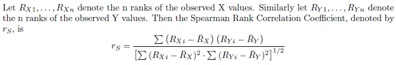

Spearman's Rank Correlation Coefficient
Spearman's Rank Correlation Coefficient is a nonparametric procedure used to make inferences about the association between two random variables. To calculate this coefficient we first rank the X values from 1 to n and rank the Y values from 1 to n.

The Spearman Rank Correlation Coefficient takes on values between -1 and 1. The coefficient will be exactly 1 when the ranks for X are identical to the ranks of Y. In this case there is perfect association between the two variables. It will be exactly -1 when the case with rank 1 for X has rank n for Y, the case with rank 2 for X has rank n-1 for Y, and so on. In this case there is perfect inverse association between the two variables. A Spearman Rank Correlation Coefficient of 0 indicates that there is very little association between X and Y. An advantage of Spearman's procedure over Pearson's is that Spearman's is robust to a departure in the assumption of a linear relationship between X and Y.
-- ErinEsp - 02 Jan 2011